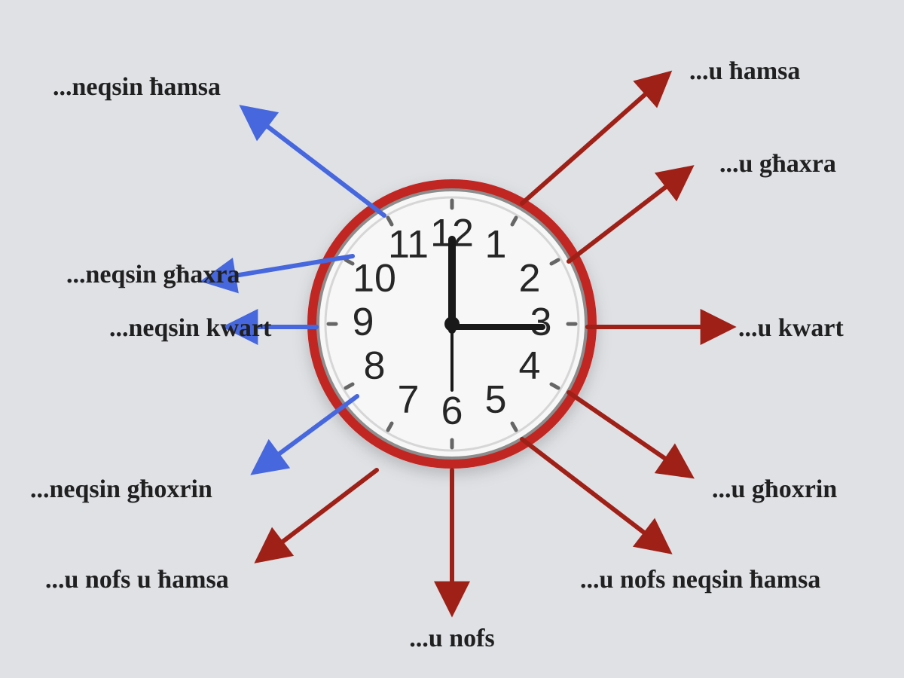

Core Numbers
1-10
- 1wieħed
- 2tnejn
- 3tlieta
- 4erbgħa
- 5ħamsa
- 6sitta
- 7sebgħa
- 8tmienja
- 9disgħa
- 10għaxra
11-19
- 11ħdax
- 12tnax
- 13tlettax
- 14erbatax
- 15ħmistax
- 16sittax
- 17sbatax
- 18tmintax
- 19dsatax
Tens
- 20għoxrin
- 30tletin
- 40erbgħin
- 50ħamsin
- 60sittin
- 70sebgħin
- 80tmenin
- 90disgħin
- 100mija
[unit] + u + [ten]wieħed u għoxrin minuta= twenty-one minutessitta u tletin minuta= thirty-six minuteserbgħa u għoxrin siegħa= twenty-four hours
First, Second, Third...
Pairs, Threes, Fours and Group Examples
Very Common Counting Patterns
| Maltese | English |
|---|---|
| żewġt itfal | two children |
| żewġt iklieb | two dogs |
| żewġ fliexken | two bottles |
| tliet itfal | three children |
| tliet persuni | three people |
| erbat itfal | four children |
| erba' persuni | four people |
| ħames itfal | five children |
| sitt itfal | six children |
Examples In Sentences
Fl-istampa hemm żewġt itfal.= In the picture there are two children.Jien nara tliet persuni.= I can see three people.Hemm erba' siġġijiet fil-kċina.= There are four chairs in the kitchen.Fuq il-mejda hemm żewġ fliexken.= There are two bottles on the table.Fl-istampa qed naraw ħames itfal.= In the picture we can see five children.
Days of the Week
Months of the Year
Seasons of the Year
Useful Time Words
Telling the Time in Maltese
Full Hours
| 1:00 | is-siegħa |
|---|---|
| 2:00 | is-sagħtejn |
| 3:00 | it-tlieta |
| 4:00 | l-erbgħa |
| 5:00 | il-ħamsa |
| 6:00 | is-sitta |
| 7:00 | is-sebgħa |
| 8:00 | it-tmienja |
| 9:00 | id-disgħa |
| 10:00 | l-għaxra |
| 11:00 | il-ħdax |
| 12:00pm | nofsinhar |
| 12:00am | nofsillejl |
Parts of the Day
u = past
[hour] + u + [minutes]it-tlieta u ħamsa= five past threel-erbgħa u għaxra= ten past fouril-ħamsa u kwart= quarter past fiveit-tmienja u nofs= half past eight
neqsin = to
[next hour] + neqsin + [minutes]il-ħamsa neqsin ħamsa= five to fiveis-sebgħa neqsin kwart= quarter to sevenit-tmienja neqsin għoxrin= twenty to eightl-erbgħa neqsin għaxra= ten to four
More Minute Examples
| Time | Maltese | English |
|---|---|---|
| 3:05 | it-tlieta u ħamsa | five past three |
| 4:10 | l-erbgħa u għaxra | ten past four |
| 5:15 | il-ħamsa u kwart | quarter past five |
| 6:20 | is-sitta u għoxrin | twenty past six |
| 8:30 | it-tmienja u nofs | half past eight |
| 4:55 | il-ħamsa neqsin ħamsa | five to five |
| 6:45 | is-sebgħa neqsin kwart | quarter to seven |
| 7:40 | it-tmienja neqsin għoxrin | twenty to eight |
| 3:50 | l-erbgħa neqsin għaxra | ten to four |
| 4:25 | l-erbgħa u nofs neqsin ħamsa | twenty-five past four |
Maltese Time Clock
This visual summary shows the main minute patterns around the clock: u ħamsa, u għaxra, u kwart, u għoxrin, u nofs, and the matching neqsin forms.

Time Units
Ready-Made Models
Date and Calendar
Illum it-Tlieta.= Today is Tuesday.Għandi appuntament f'April.= I have an appointment in April.Fis-sajf inħobb immur il-baħar.= In summer I like to go to the sea.Il-ġimgħa d-dieħla se mmur Għawdex.= Next week I will go to Gozo.
Time and Routine
X'ħin hu?= What time is it?Huwa l-erbgħa u għaxra.= It is ten past four.Filgħodu nqum fis-sebgħa.= In the morning I wake up at seven.Ilbieraħ mort il-ħanut fl-għaxra ta' billejl.= Yesterday I went to the shop at ten at night.
Plans, Dates, Appointments and Everyday Events
These short phrases are designed for practical speaking and homework. They use safe Level 1 grammar and come with English translation.